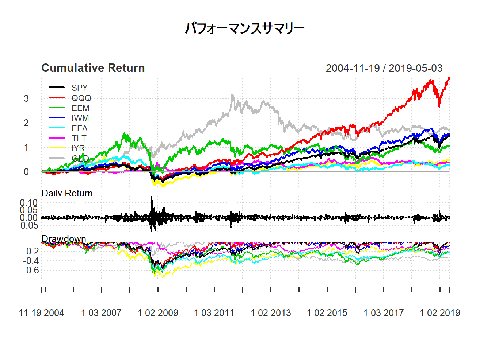
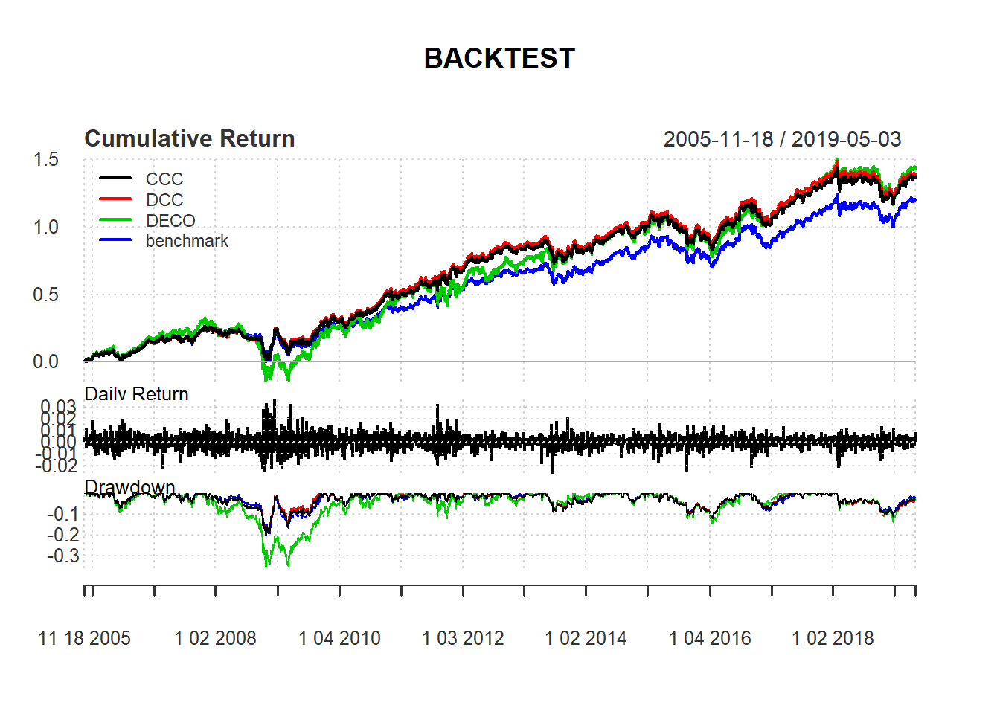
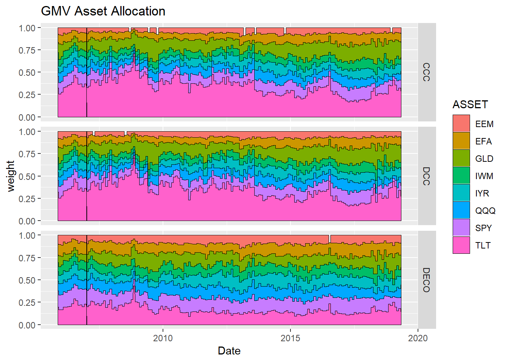
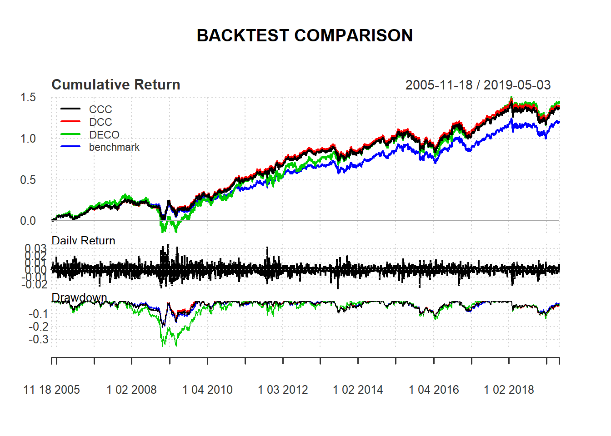
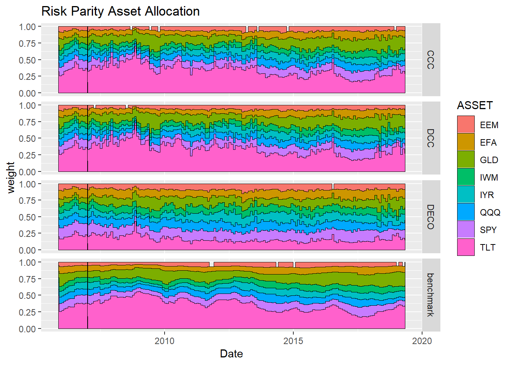

おはこんばんにちは。勤め先で、アセットアロケーションに関するワークショップに参加したので、この分野は完全なる専門外ですがシミュレーションをしてみたいと思います。今回は、最小分散ポートフォリオ(minimum variance portfolio)を基本ポートフォリオとしたうえで、その分散共分散行列（予測値）をどのように推計するのかという点について先行研究を参考にエクササイズしていきたいと思います。先行研究は以下の論文です（オペレーションリサーチのジャーナルでした）。
[https://papers.ssrn.com/sol3/papers.cfm?abstract_id=2947643:embed:cite]
最小分散ポートフォリオ
最小分散ポートフォリオの詳しい説明はここでは割愛しますが、要は各資産（内株、外株、内債、外債、オルタナ）のリターンの平均と分散を計算し、それらを縦軸平均値、横軸分散の二次平面にプロットしたうえで、投資可能範囲を計算し、その集合の中で最も分散が小さくなるポートフォリオの事らしいです（下図参照）。

minimum variance portfolio
先行研究のCarroll et. al. (2017)では、「 this paper focusses on minimum-variance portfolios requiring only estimates of asset covariance, hence bypassing the well-known problem of estimation error in forecasting expected asset returns. 」と記載されており、現状でも期待リターンの推計は難しく、それを必要としない最小分散ポートフォリオは有益で実践的な手法であるといえます。最小分散ポートフォリオの目的関数は、その名の通り「分散を最小化すること」です。今、各資産のリターンを集めたベクトルを[tex:r]、各資産の保有ウェイトを\(\theta\)、ポートフォリオリターンを\(R_{p}\)で表すことにすると、ポートフォリオ全体の分散\(var(R_{p})\)は以下のように記述できます。
\[ var(R_{p}) = var(r^{T}\theta) = E( (r^{T}\theta)(r^{T}\theta)^{T}) = \theta^{T}\Sigma\theta \]
ここで\(Sigma\)は\(r\)の分散共分散行列です。よって、最小化問題は以下になります。
\[ \min_{\theta}(\theta^{T}\Sigma\theta) \\ s.t 1^{T}\theta = 1 \]
ここでは、フルインベストメントを制約条件に加えています。ラグランジュ未定乗数法を用いてこの問題を解いてみましょう。ラグランジュ関数\(L\)は以下のようになります。
\[ L = \theta^{T}\Sigma\theta + \lambda(1^{T}\theta - 1) \]
1階の条件は、
\[ \displaystyle\frac{\partial L}{\partial \theta} = 2\Sigma\theta + 1\lambda = 0 \\ \displaystyle \frac{\partial L}{\partial \lambda} = 1^{T} \theta = 1 \]
1本目の式を\(\theta\)について解くと、
\[ \theta = \Sigma^{-1}1\lambda^{*} \]
となります。ここで、\(\lambda^{*}=-1/2\lambda\)です。これを2本目の式に代入し、\(\lambda^{*}\)について解きます。
\[ 1^{T}\Sigma1\lambda^{*} = 1 \\ \displaystyle \lambda^{*} = \frac{1}{1^{T}\Sigma^{-1}1} \]
\(\theta = \Sigma^{-1}1\lambda^{*}\)だったので、\(\lambda^{*}\)を消去すると、
\[ \displaystyle \theta_{gmv} = \frac{\Sigma^{-1}1}{1^{T}\Sigma^{-1}1} \]
となり、最適なウェイトを求めることができました。とりあえず、これをRで実装しておきます。
gmv <- function(r_dat,r_cov){
library(MASS)
i <- matrix(1,NCOL(r_dat),1)
r_weight <- (ginv(r_cov)%*%i)/as.numeric(t(i)%*%ginv(r_cov)%*%i)
wr_dat <- r_dat*as.numeric(r_weight)
portfolio <- apply(wr_dat,1,sum)
pr_dat <- data.frame(wr_dat,portfolio)
sd <- sd(portfolio)
result <- list(r_weight,pr_dat,sd)
names(result) <- c("weight","return","portfolio risk")
return(result)
}
nlgmv <- function(r_dat,r_cov){
qp.out <- solve.QP(Dmat=r_cov,dvec=rep(0,NCOL(r_dat)),Amat=cbind(rep(1,NCOL(r_dat)),diag(NCOL(r_dat))),
bvec=c(1,rep(0,NCOL(r_dat))),meq=1)
r_weight <- qp.out$solution
wr_dat <- r_dat*r_weight
portfolio <- apply(wr_dat,1,sum)
pr_dat <- data.frame(wr_dat,portfolio)
sd <- sd(portfolio)
result <- list(r_weight,pr_dat,sd)
names(result) <- c("weight","return","portfolio risk")
return(result)
}入力は各資産のリターンと分散共分散行列になっています。出力はウェイト、リターン、リスクです。nlgmvは最小分散ポートフォリオの空売り制約バージョンです。解析的な解は得られないので、数値的に買いを求めています。
分散共分散行列をどのように求めるか
最小分散ポートフォリオの計算式は求めることができました。次は、その入力である分散共分散行列をどうやって求めるのかについて分析したいと思います。一番原始的な方法はその時点以前に利用可能なリターンデータを標本として分散共分散行列を求め、その値を固定して最小分散ポートフォリオを求めるというヒストリカルなアプローチかと思います（つまりウェイトも固定）。ただ、これはあくまで過去の平均値を将来の予想値に使用するため、いろいろ問題が出てくるかと思います。専門外の私が思いつくものとしては、前日ある資産Aのリターンが大きく下落したという場面で明日もこの資産の分散は大きくなることが予想されるにも関わらず、平均値を使用するため昨日の効果が薄められてしまうことでしょうか。それに、ウェイトを最初から変更しないというのも時間がたつにつれ、最適点から離れていく気がします。ただ、ではどう推計するのかついてはこの分野でも試行錯誤が行われているようです。Carroll et. al. (2017)でも「The estimation of covariance matrices for portfolios with a large number of assets still remains a fundamental challenge in portfolio optimization.」と述べられていました。この論文では以下のようなモデルを用いて推計が行われています。いずれも、分散共分散行列を時変としているところに特徴があります。
- Constant conditional correlation (CCC) model
元論文はこちら。
[https://www.jstor.org/stable/2109358?read-now=1&seq=3#page_scan_tab_contents:title]
まず、分散共分散行列と相関行列の関係性から、\(\Sigma_{t} = D_{t}R_{t}D_{t}\)となります。ここで、\(R_{t}\)は相関行列、\(D_{t}\)は\(diag(\sigma_{1,t},...,\sigma_{N,t})\)で各資産\(tt\)期の標準偏差\(\sigma_{i,t}\)を対角成分に並べた行列です。ここから、\(D_{t}\)と\(R_{t}\)を分けて推計していきます。まず、\(D_{t}\)ですが、こちらは以下のような多変量GARCHモデル(1,1)で推計します。
\[ r_{t} = \mu + u_{t} \\ u_{t} = \sigma_{t}\epsilon \\ \sigma_{t}^{2} = \alpha_{0} + \alpha_{1}u_{t-1}^{2} + \alpha_{2}\sigma_{t-1}^{2} \\ \epsilon_{t} = NID(0,1) \\ E(u_{t}|u_{t-1}) = 0 \]
ここで、\(\mu\)はリターンの標本平均です。\(\alpha_{i}\)は推定すべきパラメータ。\(D_{t}\)をGARCHで推計しているので、リターンの分布が正規分布より裾野の厚い分布に従い、またリターンの変化は一定ではなく前日の分散に依存する関係をモデル化しているといえるのではないでしょうか。とりあえずこれで\(D_{t}\)の推計はできたということにします。次に\(R_{t}\)の推計ですが、このモデルではリターンを標本として求めるヒストリカルなアプローチを取ります。つまり、\(R_{t}\)は定数です。よって、リターン変動の大きさは時間によって変化するが、各資産の相対的な関係性は不変であるという仮定を置いていることになります。
- Dynamic Conditional Correlation (DCC) model 元論文はこちら。
[http://www.cass.city.ac.uk/__data/assets/pdf_file/0003/78960/Week7Engle_2002.pdf]
こちらのモデルでは、\(D_{t}\)を求めるところまでは①と同じですが、[\(R_{t}\)の求め方が異なっており、ARMA(1,1)を用いて推計します。相関行列はやはり定数ではないということで、\(tex:t\)期までに利用可能なリターンを用いて推計をかけようということになっています。このモデルの相関行列\(R_{t}\)は、
\[ R_{t} = diag(Q_{t})^{-1/2}Q_{t}diag(Q_{t})^{-1/2} \]
です。ここで、\(Q_{t}\)は\(t\)期での条件付分散共分散行列で以下のように定式化されます。
\[ Q_{t} = \bar{Q}(1-a-b) + adiag(Q_{t-1})^{1/2}\epsilon_{i,t-1}\epsilon_{i,t-1}diag(Q_{t-1})^{1/2} + bQ_{t-1} \]
ここで、\(\bar{Q}\)はヒストリカルな方法で計算した分散共分散行列であり、\(a,b\)はパラメータです。この方法では、先ほどとは異なり、リターン変動の大きさが時間によって変化するだけでなく、各資産の相対的な関係性も通時的に変化していくという仮定を置いていることになります。金融危機時には全資産のリターンが下落し、各資産の相関が正になる事象も観測されていることから、この定式化は魅力的であるということができるのではないでしょうか。
- Dynamic Equicorrelation (DECO) model 元論文はこちら
[https://faculty.chicagobooth.edu/bryan.kelly/research/pdf/deco.pdf]
この論文はまだきっちり読めていないのですが、相関行列[tex:R_{t}]の定義から
\[ R_{t} = (1-\rho_{t})I_{N} + \rho_{t}1 \]
となるようです。ここで、\(\rho_{t}\)はスカラーでequicorrelationの程度を表す係数です。equicorrelationとは平均的なペアワイズ相関の事であると理解しています。つまりは欠損値がなければ普通の相関と変わりないんじゃないかと。ただ、資産が増えればそのような問題にも対処する必要があるのでその点ではよい推定量のようです。\(\rho_{t}\)は以下のように求めることができます。
\[ \displaystyle \rho_{t} = \frac{1}{N(N-1)}(\iota^{T}R_{t}^{DCC}\iota - N) = \frac{2}{N(N-1)}\sum_{i>j}\frac{q_{ij,t}}{\sqrt{q_{ii,t} q_{jj,t}}} \]
ここで、\(\iota\)はN×1ベクトルで要素は全て1です。また、\(q_{ij,t}\)は\(Q_{t}\)のi,j要素です。
さて、分散共分散行列のモデル化ができたところで、ここまでをRで実装しておきます。
carroll <- function(r_dat,FLG){
library(rmgarch)
if(FLG == "benchmark"){
H <- cov(r_dat)
}else{
#1. define variables
N <- NCOL(r_dat) # the number of assets
#2. estimate covariance matrix
basic_garch = ugarchspec(mean.model = list(armaOrder = c(0, 0),include.mean=TRUE), variance.model = list(garchOrder = c(1,1), model = 'sGARCH'), distribution.model = 'norm')
multi_garch = multispec(replicate(N, basic_garch))
dcc_set = dccspec(uspec = multi_garch, dccOrder = c(1, 1), distribution = "mvnorm",model = "DCC")
fit_dcc_garch = dccfit(dcc_set, data = r_dat, fit.control = list(eval.se = TRUE))
forecast_dcc_garch <- dccforecast(fit_dcc_garch)
if (FLG == "CCC"){
#Constant conditional correlation (CCC) model
D <- sigma(forecast_dcc_garch)
R_ccc <- cor(r_dat)
H <- diag(D[,,1])%*%R_ccc%*%diag(D[,,1])
colnames(H) <- colnames(r_dat)
rownames(H) <- colnames(r_dat)
}
else{
#Dynamic Conditional Correlation (DCC) model
H <- as.matrix(rcov(forecast_dcc_garch)[[1]][,,1])
if (FLG == "DECO"){
#Dynamic Equicorrelation (DECO) model
one <- matrix(1,N,N)
iota <- rep(1,N)
Q_dcc <- rcor(forecast_dcc_garch,type="Q")[[1]][,,1]
rho <- as.vector((N*(N-1))^(-1)*(t(iota)%*%Q_dcc%*%iota-N))
D <- sigma(forecast_dcc_garch)
R_deco <- (1-rho)*diag(1,N,N) + rho*one
H <- diag(D[,,1])%*%R_deco%*%diag(D[,,1])
colnames(H) <- colnames(r_dat)
rownames(H) <- colnames(r_dat)
}
}
}
return(H)
}本来であれば、パッケージを使用するべきではないのですが、今日はエクササイズなので推計結果だけを追い求めたいと思います。GARCHについては再来週ぐらいに記事を書く予定です。 これで準備ができました。この関数にリターンデータを入れて、分散共分散行列を計算し、それを用いて最小分散ポートフォリオを計算することができるようになりました。
テスト用データの収集
データは以下の記事を参考にしました。
[https://www.r-bloggers.com/introduction-to-asset-allocation/:embed:cite]
使用したのは、以下のインデックスに連動するETF(iShares)の基準価額データです。
①S&P500 ②NASDAQ100 ③MSCI Emerging Markets ④Russell 2000 ⑤MSCI EAFE ⑥US 20 Year Treasury(the Barclays Capital 20+ Year Treasury Index) ⑦U.S. Real Estate(the Dow Jones US Real Estate Index) ⑧gold bullion market
まず、データ集めです。
library(quantmod)
#**************************
# ★8 ASSETS SIMULATION
# SPY - S&P 500
# QQQ - Nasdaq 100
# EEM - Emerging Markets
# IWM - Russell 2000
# EFA - EAFE
# TLT - 20 Year Treasury
# IYR - U.S. Real Estate
# GLD - Gold
#**************************
# load historical prices from Yahoo Finance
symbol.names = c("S&P 500","Nasdaq 100","Emerging Markets","Russell 2000","EAFE","20 Year Treasury","U.S. Real Estate","Gold")
symbols = c("SPY","QQQ","EEM","IWM","EFA","TLT","IYR","GLD")
getSymbols(symbols, from = '1980-01-01', auto.assign = TRUE)
#gn dates for all symbols & convert to monthly
hist.prices = merge(SPY,QQQ,EEM,IWM,EFA,TLT,IYR,GLD)
month.ends = endpoints(hist.prices, 'day')
hist.prices = Cl(hist.prices)[month.ends, ]
colnames(hist.prices) = symbols
# remove any missing data
hist.prices = na.omit(hist.prices['1995::'])
# compute simple returns
hist.returns = na.omit( ROC(hist.prices, type = 'discrete') )
# compute historical returns, risk, and correlation
ia = list()
ia$expected.return = apply(hist.returns, 2, mean, na.rm = T)
ia$risk = apply(hist.returns, 2, sd, na.rm = T)
ia$correlation = cor(hist.returns, use = 'complete.obs', method = 'pearson')
ia$symbols = symbols
ia$symbol.names = symbol.names
ia$n = length(symbols)
ia$hist.returns = hist.returns
# convert to annual, year = 12 months
annual.factor = 12
ia$expected.return = annual.factor * ia$expected.return
ia$risk = sqrt(annual.factor) * ia$risk
rm(SPY,QQQ,EEM,IWM,EFA,TLT,IYR,GLD)リターンをプロットするとこんな感じです。
PerformanceAnalytics::charts.PerformanceSummary(hist.returns, main = "パフォーマンスサマリー")
次に、バックテストのコーディングを行います。一気にコードを公開します。
# BACK TEST
backtest <- function(r_dat,FLG,start_date,span,learning_term,port){
#-----------------------------------------
# BACKTEST
# r_dat - return data(xts object)
# FLG - flag(CCC,DCC,DECO)
# start_date - start date for backtest
# span - rebalance frequency
# learning_term - learning term (days)
# port - method of portfolio optimization
#-----------------------------------------
library(stringi)
initial_dat <- r_dat[stri_c(as.Date(start_date)-learning_term,"::",as.Date(start_date))]
for (i in NROW(initial_dat):NROW(r_dat)) {
if (i == NROW(initial_dat)){
H <- carroll(initial_dat[1:(NROW(initial_dat)-1),],FLG)
if (port == "nlgmv"){
result <- nlgmv(initial_dat,H)
}else if (port == "risk parity"){
result <- risk_parity(initial_dat,H)
}
weight <- t(result$weight)
colnames(weight) <- colnames(initial_dat)
p_return <- initial_dat[NROW(initial_dat),]*result$weight
} else {
if (i %in% endpoints(r_dat,span)){
H <- carroll(test_dat[1:(NROW(test_dat)-1),],FLG)
if (port == "nlgmv"){
result <- nlgmv(test_dat,H)
}else if (port == "risk parity"){
result <- risk_parity(test_dat,H)
}
}
weight <- rbind(weight,t(result$weight))
p_return <- rbind(p_return,test_dat[NROW(test_dat),]*result$weight)
}
if (i != NROW(r_dat)){
term <- stri_c(index(r_dat[i+1,])-learning_term,"::",index(r_dat[i+1,]))
test_dat <- r_dat[term]
}
}
p_return$portfolio <- xts(apply(p_return,1,sum),order.by = index(p_return))
weight.xts <- xts(weight,order.by = index(p_return))
result <- list(p_return,weight.xts)
names(result) <- c("return","weight")
return(result)
}
CCC <- backtest(hist.returns,"CCC","2007-01-04","months",365,"risk parity")
DCC <- backtest(hist.returns,"DCC","2007-01-04","months",365,"risk parity")
DECO <- backtest(hist.returns,"DECO","2007-01-04","months",365,"risk parity")
benchmark <- backtest(hist.returns,"benchmark","2007-01-04","months",365,"risk parity")
result <- merge(CCC$return$portfolio,DCC$return$portfolio,DECO$return$portfolio,benchmark$return$portfolio)
colnames(result) <- c("CCC","DCC","DECO","benchmark")計算結果をグラフにしてみます。
PerformanceAnalytics::charts.PerformanceSummary(result,main = "BACKTEST")
空売り制約を課したので、上で定義した最小分散ポートフォリオは使用していません。どうやらこれだけで解析的に解くのは難しいらしく、数値的に解くことにしています。リバランス期間を週次にしたので、自前のPCでは計算に時間がかかりましたが、結果が計算できました。
リーマン以降はどうやらベンチマークである等ウェイトポートフォリオよりをアウトパフォームしているようです。特に、DECOはいい感じです。そもそもDECOとDCCはほぼ変わらないパフォーマンスであると思っていたのですが、どうやら自分の理解が足らないらしく、論文の読み返す必要があるようです。Equicorrelationの意味をもう一度考えてみたいと思います。それぞれの組入比率の推移は以下のようになりました。
# plot allocation weighting
d_allocation <- function(ggweight,title){
#install.packages("tidyverse")
library(tidyverse)
ggweight <- gather(ggweight,key=ASSET,value=weight,-Date,-method)
ggplot(ggweight, aes(x=Date, y=weight,fill=ASSET)) +
geom_area(colour="black",size=.1) +
scale_y_continuous(limits = c(0,1)) +
labs(title=title) + facet_grid(method~.)
}
gmv_weight <- rbind(data.frame(CCC$weight,method="CCC",Date=index(CCC$weight)),data.frame(DCC$weight,method="DCC",Date=index(DCC$weight)),data.frame(DECO$weight,method="DECO",Date=index(DECO$weight)))
# plot allocation weighting
d_allocation(gmv_weight,"GMV Asset Allocation")
リーマンの際にTLT、つまり米国債への比率を増やしているようです。CCCとDCCはそれ以外の部分でも米国債への比率が高く、よく挙げられる最小分散ポートフォリオの問題点がここでも発生しているようです。一方、DECOがやはり個性的な組入比率の推移をしており、ここらを考えてももう一度論文を読み返してみる必要がありそうです。
追記（2019/3/3） これまでは、最小分散ポートフォリオで分析をしていましたが、リスクパリティの結果も見たいなと言うことで、そのコードも書いてみました。
risk_parity <- function(r_dat,r_cov){
fn <- function(weight, r_cov) {
N <- NROW(r_cov)
risks <- weight * (r_cov %*% weight)
g <- rep(risks, times = N) - rep(risks, each = N)
return(sum(g^2))
}
dfn <- function(weight,r_cov){
out <- weight
for (i in 0:length(weight)) {
up <- dn <- weight
up[i] <- up[i]+.0001
dn[i] <- dn[i]-.0001
out[i] = (fn(up,r_cov) - fn(dn,r_cov))/.0002
}
return(out)
}
std <- sqrt(diag(r_cov))
x0 <- 1/std/sum(1/std)
res <- nloptr::nloptr(x0=x0,
eval_f=fn,
eval_grad_f=dfn,
eval_g_eq=function(weight,r_cov) { sum(weight) - 1 },
eval_jac_g_eq=function(weight,r_cov) { rep(1,length(std)) },
lb=rep(0,length(std)),ub=rep(1,length(std)),
opts = list("algorithm"="NLOPT_LD_SLSQP","print_level" = 0,"xtol_rel"=1.0e-8,"maxeval" = 1000),
r_cov = r_cov)
r_weight <- res$solution
names(r_weight) <- colnames(r_cov)
wr_dat <- r_dat*r_weight
portfolio <- apply(wr_dat,1,sum)
pr_dat <- data.frame(wr_dat,portfolio)
sd <- sd(portfolio)
result <- list(r_weight,pr_dat,sd)
names(result) <- c("weight","return","portfolio risk")
return(result)
}
CCC <- backtest(hist.returns,"CCC","2007-01-04","months",365,"risk parity")
DCC <- backtest(hist.returns,"DCC","2007-01-04","months",365,"risk parity")
DECO <- backtest(hist.returns,"DECO","2007-01-04","months",365,"risk parity")
benchmark <- backtest(hist.returns,"benchmark","2007-01-04","months",365,"risk parity")
result <- merge(CCC$return$portfolio,DCC$return$portfolio,DECO$return$portfolio,benchmark$return$portfolio)
colnames(result) <- c("CCC","DCC","DECO","benchmark")結果はこんな感じ。
PerformanceAnalytics::charts.PerformanceSummary(result, main = "BACKTEST COMPARISON")
library(plotly)
# plot allocation weighting
riskparity_weight <- rbind(data.frame(CCC$weight,method="CCC",Date=index(CCC$weight)),data.frame(DCC$weight,method="DCC",Date=index(DCC$weight)),data.frame(DECO$weight,method="DECO",Date=index(DECO$weight)),data.frame(benchmark$weight,method="benchmark",Date=index(benchmark$weight)))PerformanceAnalytics::charts.PerformanceSummary(result, main = "BACKTEST COMPARISON")
riskparity_weight <- rbind(data.frame(CCC$weight,method="CCC",Date=index(CCC$weight)),data.frame(DCC$weight,method="DCC",Date=index(DCC$weight)),data.frame(DECO$weight,method="DECO",Date=index(DECO$weight)),data.frame(benchmark$weight,method="benchmark",Date=index(benchmark$weight)))
# plot allocation weighting
d_allocation(riskparity_weight, "Risk Parity Asset Allocation")
どの手法もbenchmarkをアウトパーフォームできているという好ましい結果になりました。 やはり、分散共分散行列の推計がうまくいっているようです。また、DECOのパフォーマンスがよいのは、相関行列に各資産ペアの相関係数の平均値を用いているため、他の手法よりもリスク資産の組み入れが多くなったからだと思われます。ウェイトは以下の通りです。
とりあえず、今日はここまで。